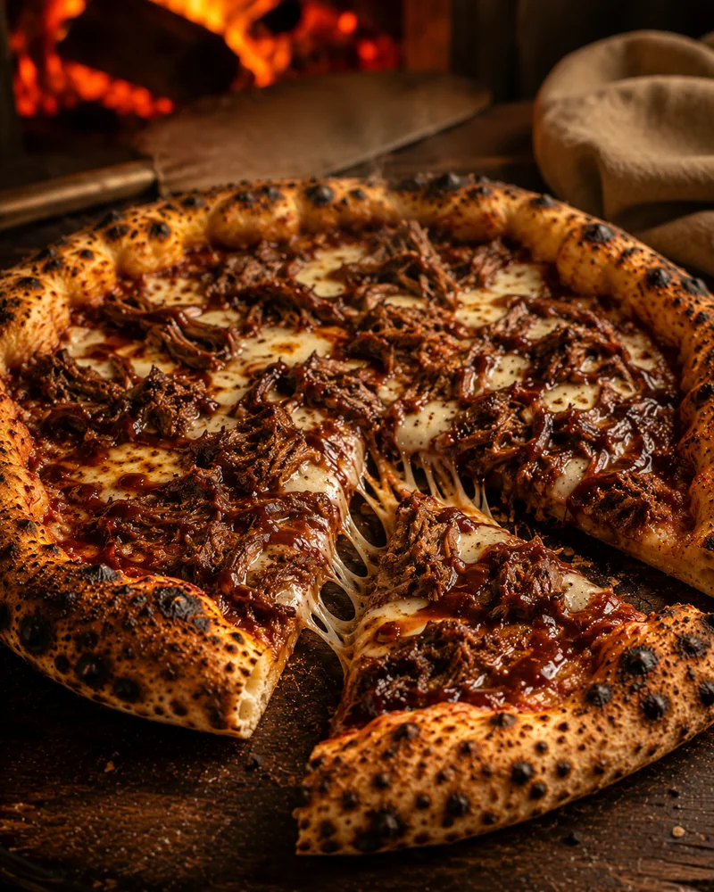
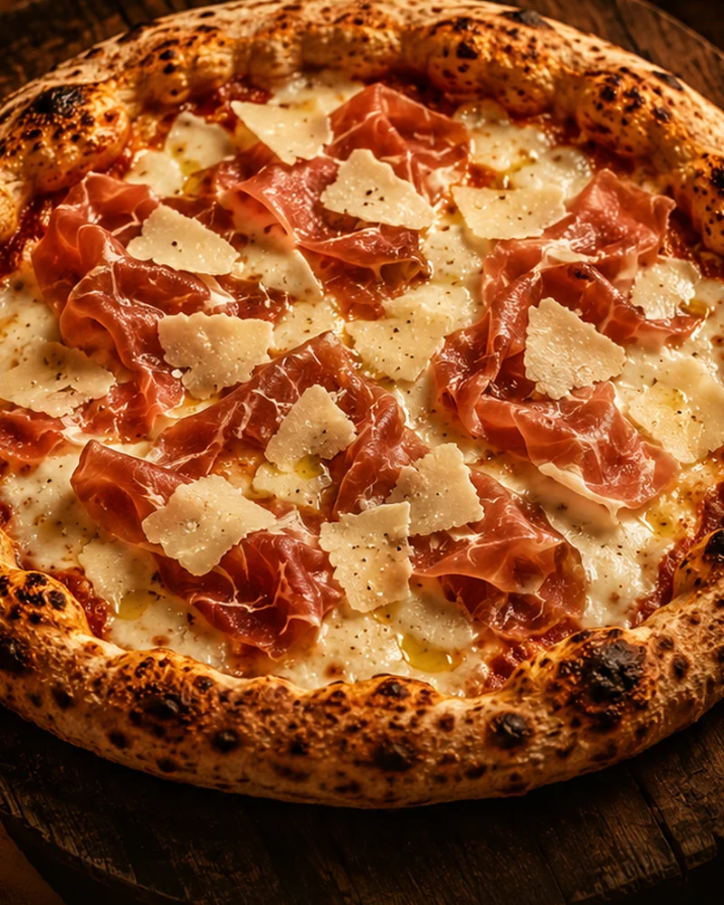
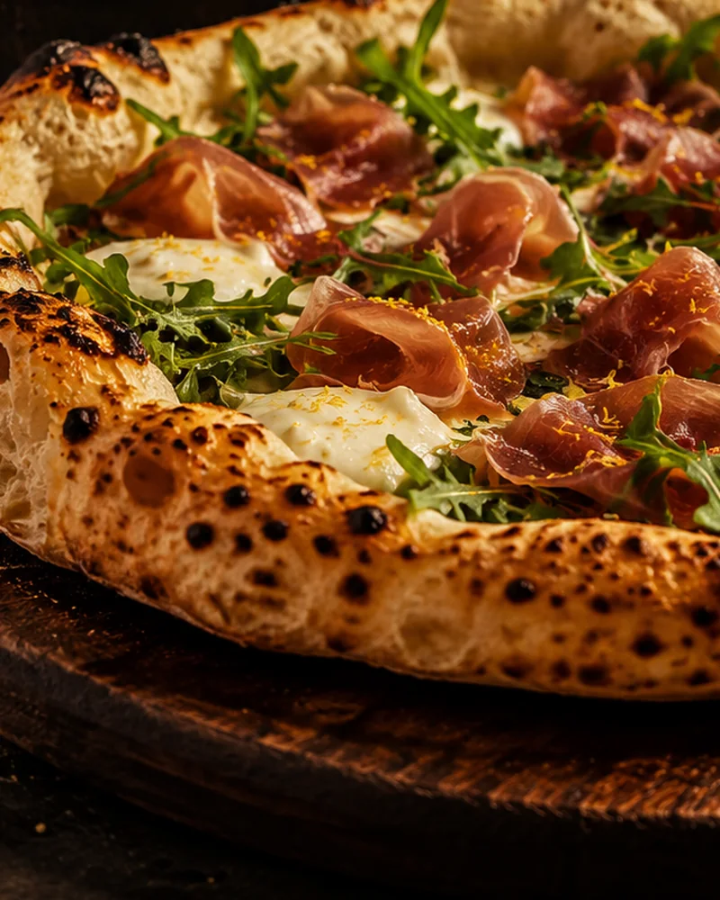

01
48 horas
Massa de longa fermentação para uma textura leve, aerada e cheia de personalidade.
Não fazemos massa apenas para vender pizza. Fazemos para que alguém tenha uma noite melhor.
@brasalentapizzaria ↗
NOSSA ESSÊNCIA
Para a Brasa Lenta, pizza é o elo entre pessoas. É a mesa que se abre, a conversa que demora, o cheiro que vira lembrança e aquele momento em que a casa parece mais quente.
É por isso que fazemos cada etapa sem atalhos. Porque algumas coisas só ficam boas quando recebem tempo.
O que você sente na mordida começa muito antes do forno.
Massa de longa fermentação para uma textura leve, aerada e cheia de personalidade.
Matéria-prima escolhida para sustentar o estilo de massa que define a experiência Brasa Lenta.
Molho de tomate com sabor vivo, equilibrado e presente sem esconder o restante da pizza.
Calor alto, borda marcada e o cuidado de entregar cada pizza no ponto que a Brasa acredita.
Existem cheiros que viram lembrança para sempre.
BRASA LENTA · PIZZAS ARTESANAIS
Uma seleção que apresenta o jeito Brasa Lenta de fazer pizza: massa protagonista, ingredientes reconhecíveis e equilíbrio em cada cobertura.
Ver cardápio completo →
Tomate San Marzano, muçarela, manjericão fresco e azeite.

Calabresa tostada, cebola roxa, queijo derretido e borda bem marcada.

Muçarela, gorgonzola, parmesão e provolone em uma combinação cremosa e intensa.
Além dos clássicos, a Brasa percorre sabores mais intensos, verdes e autorais — sempre com a massa como protagonista, equilíbrio nos ingredientes e cuidado em cada fornada.
Ver cardápio digital →
Costela desfiada lentamente, muçarela e barbecue defumado da casa.
Ver no cardápio ↗
Presunto parma, muçarela de búfala e lascas de parmesão.
Ver no cardápio ↗
Muçarela de búfala, presunto parma, rúcula fresca e raspas de limão siciliano.
Ver no cardápio ↗OUTROS SABORES DA CASA

Uma linha artesanal pré-assada, pensada para levar a identidade da Brasa Lenta para outros momentos da rotina — com praticidade, mas sem abrir mão do cuidado no processo.
Disponível em Matão em 5 pontos parceiros ↓Agora a linha Brasa em Casa está em cinco pontos parceiros selecionados na cidade — mais perto da sua rotina, com o mesmo cuidado em cada pizza.
Prefere pedir agora? →Nova Matão · Matão/SP
Abrir no mapa ↗Matão/SP
Ver unidade ↗Bela Vista · Matão/SP
Abrir no mapa ↗Parque Petrópolis · Matão/SP
Abrir no mapa ↗Matão/SP
Consultar ponto →Hoje a Brasa já está presente em cinco pontos parceiros de Matão. Seguimos construindo relações com negócios, eventos e experiências que compartilham o mesmo cuidado com produto, curadoria e atendimento.
Conversar sobre parceria →Uma rede que já reúne cinco pontos parceiros em Matão — aproximando a Brasa de mais casas sem abrir mão da qualidade artesanal.
Pizza como parte da atmosfera: preparo, fogo e serviço criando encontros que ficam na memória.
Harmonizações, kits e ativações pensados para unir marcas que compartilham cuidado, curadoria e experiência.
Escolha sua pizza, acompanhe as fornadas ou fale diretamente com a Brasa.